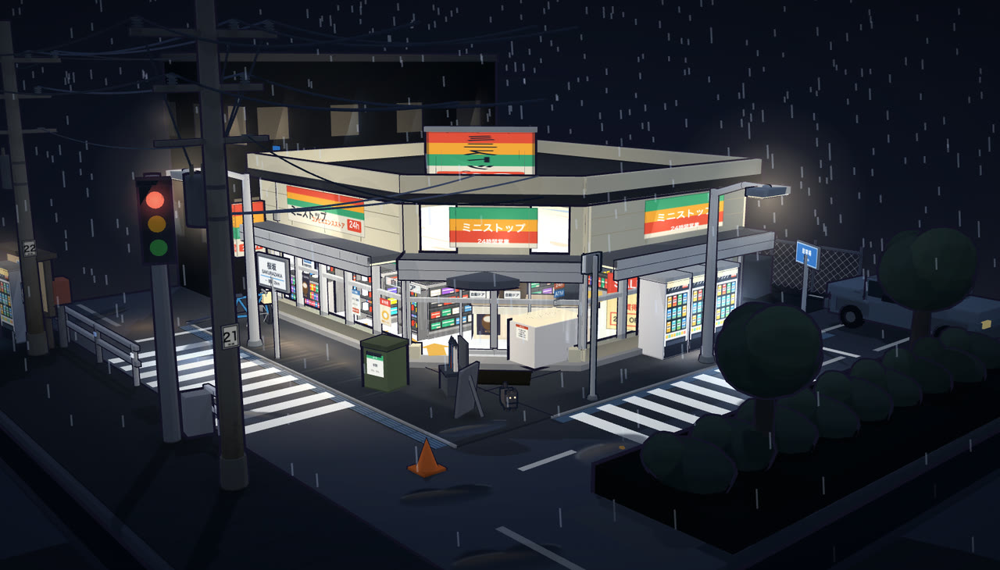
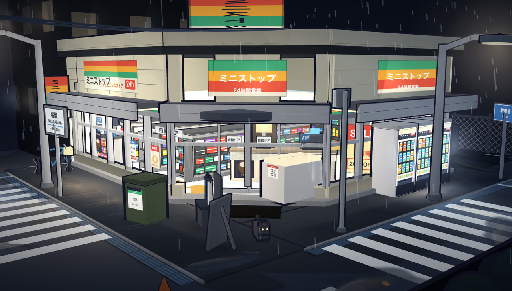
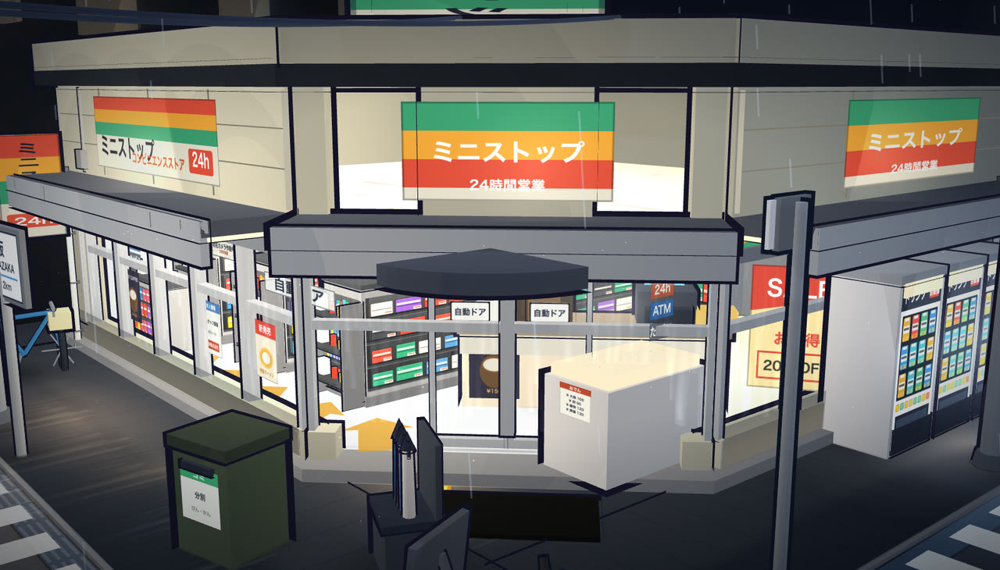
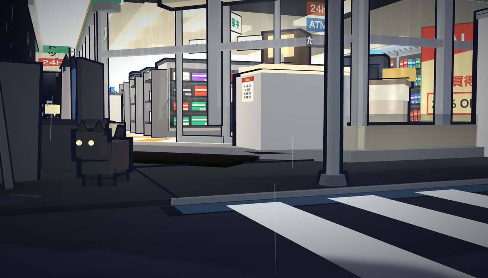
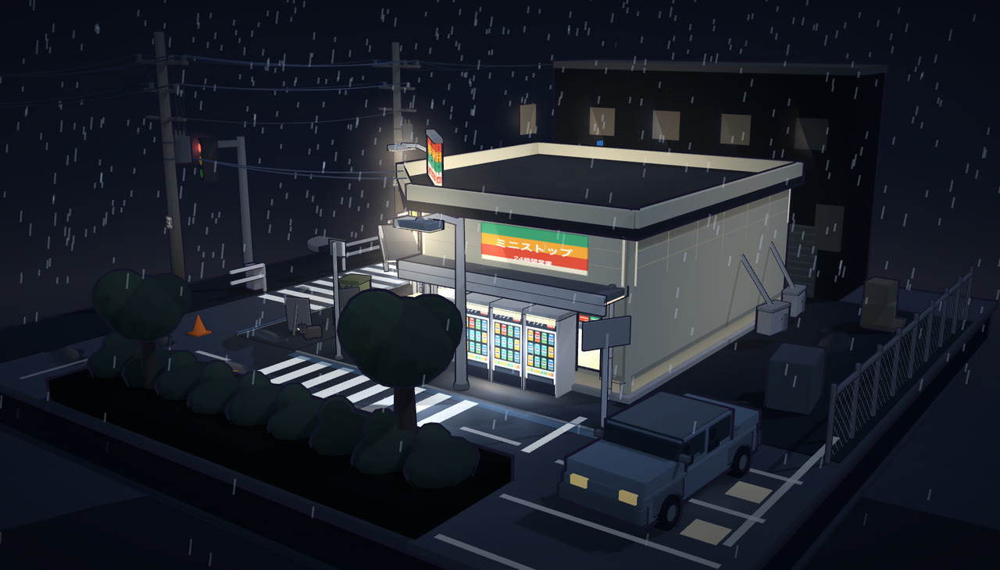
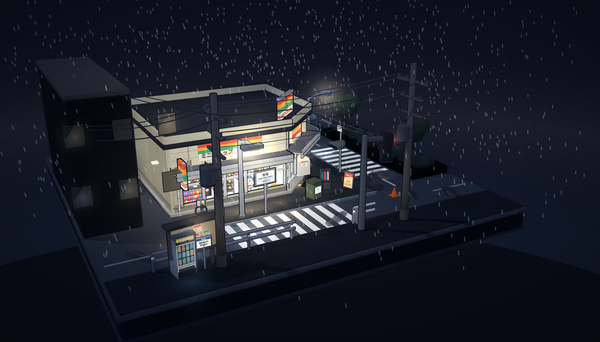

雨夜便利店街角
一座 945 KB 的微缩模型
Rainy-Night Konbini Corner
A 945 KB miniature
一个可以下载、断网打开、拖着转的雨夜便利店微缩模型网页文件， 外加一份把「每个画面决定」写清楚的说明书——做别的微缩场景可以照抄。 它不是游戏，不含建模教程，也不追求照片级真实。 A downloadable, offline-capable, drag-to-rotate miniature of a rainy-night konbini in one web file — plus a spec that writes down every visual decision, so you can copy it for other miniature scenes. It is not a game, not a modelling tutorial, not photorealism.
下面是这个场景本体（可以直接拖着转），以及它怎么做出来的完整复盘—— 包含两条被外部评审抓出的真错误，和每一步是怎么被改对的。 Below: the scene itself (drag it around), and the full post-mortem of how it was made — including two real errors external reviewers caught, and how each one was fixed.
场景本体The artifact itself
下面内嵌的是仓库 dist/rainy-night-konbini.html 的逐字节副本
（GitHub Pages 只发布 docs/，所以另存一份到 docs/dist/）。
不是录屏、不是截图。加载失败时点右上角「打开场景本体」。
Embedded below is a byte-identical copy of the repo's
dist/rainy-night-konbini.html (GitHub Pages only publishes docs/,
so a second copy lives at docs/dist/). Not a recording, not a screenshot.
If it fails to load, use "Open the scene".
看看它动起来Watch it move
68 秒巡览片，录自浏览器中交互式场景本体；六张静帧为实时渲染实截（发行 1280×730，原始采集 1600×913），机位参数写在每张图下面。 完整采集说明与迭代过程见迭代过程报告。 A 68-second tour recorded from the interactive artifact itself; six stills are real-render captures (1280×730 as shipped, 1600×913 captured) with their camera poses printed below each frame. Full capture disclosure and the iteration story live in the iteration report.






解决什么问题What problem this solves
难的不是「搭一个 3D 场景」，而是两件都没有现成答案的事。 The hard part isn't building a 3D scene — it's two things with no off-the-shelf answer.
- 同一个模型，广角一拍就是实景；视角不收，微缩感根本不出现The same model reads as life-size under a wide lens; without a narrow angle, miniaturisation never appears
- 「灯亮一点」「货架密一点」这种判断无法移交，调完即忘"Brighter lamps", "denser shelves" can't be handed over — tuned once, forgotten immediately
- 改一盏灯要重开建模软件、等编译，试错以十分钟计Changing one lamp means reopening a modeller and waiting for a build — trial-and-error in tens of minutes
- 外部贴图 = 联网，单文件契约当场破掉External textures mean network — the single-file contract breaks on the spot
- 相机 fov 压到 32°，视角成为微缩感的主要来源Camera fov pinned at 32° — the lens becomes the primary source of miniaturisation
- 判断被拆成 77 条，并标出哪些是设计判断、哪些是项目取值Judgements split into 77 clauses, each marked as design judgement or project-specific value
- 改提示词一行，刷新浏览器，两秒看到结果Change one prompt line, refresh the browser, see the result in two seconds
- 贴图全部程序化 canvas 生成，断网照常渲染All textures procedurally generated on canvas — renders offline
四问速览Four questions at a glance
Q2 什么场景→什么结果——零成本验证美学方向 / 固化可移交规格 / 离线演示。
Q3 什么结构——七段源码经 build.py 拼成 945 KB 单文件；提示词从产物反推而来。
Q4 能复用什么——单文件 three.js 骨架、硬边色阶、货架排面生成器、AR(1) 风 + 涟漪模型，以及 prompt-selfcheck。 Q1 Problem — make a miniature read as a miniature, and write down eye-only parameters as a copyable prompt.
Q2 Scenario→Outcome — zero-cost aesthetic validation / a transferable spec / offline demo.
Q3 Architecture — seven source chunks concatenated by build.py into a 945 KB single file; the prompt is reverse-derived from the artifact.
Q4 Reuse — single-file three.js skeleton, hard-edge ramp, shelf-facing generator, AR(1) wind + ripple model, and prompt-selfcheck.
为什么故意保留错误？Why are the errors kept on purpose?
prompt/ 下的 v1–v3 没有回溯修改。两条被外部评审抓出来的硬错——
「玻璃带占立面 65%」（编的数）和「灯被货架端头挡住」（错的机制）——原样留在旧版本里，
v4 用 ⚠ 标记逐条改正。错误比结论更可迁移：结论只对这一个场景有效，
而「把 0.65 m 抄成 65%」这类单位腐化，在任何工程里都会发生。
Because prompt/ v1–v3 were never back-edited. Two hard errors caught by external
review — "the glass band is 65% of the facade" (a fabricated number) and "lamps are blocked by shelf
end-caps" (a wrong mechanism) — stay in the old versions verbatim, with v4 correcting each under a ⚠ marker.
Errors transfer better than conclusions: a conclusion holds for one scene, but "transcribing
0.65 m as 65%" is a unit corruption that happens in any project.
什么场景 → 什么结果Scenario → Outcome
| 场景Scenario | 之前Before | 之后After | 证据Evidence |
|---|---|---|---|
| 零成本验证一条街景的美学方向Validate a street's aesthetic direction at zero cost | 开建模软件、找贴图、等编译Open a modeller, hunt textures, wait for builds | 改提示词一行，刷新浏览器，两秒看到结果One prompt line, one refresh, two seconds | Inferred |
| 把微缩感固化成可移交规格Freeze miniaturisation into a transferable spec | 调完即忘，下次从头试错Tuned once, forgotten, retried from scratch | 77 条分级条款 + 源码出处表77 graded clauses + a source-line provenance table | Observed |
| 离线演示 / 嵌入任意页面Offline demo / embed anywhere | 需要构建工具、CDN、贴图文件Build tooling, a CDN, texture files | 单个 .html，不请求任何外部资源One .html, zero external requests | Inferred |
| 防止提示词文档在多版本迭代中腐烂Stop a versioned prompt doc from rotting | 人手数不出断号；旧错在摘要表里复活无人察觉Humans can't count past ~40; resurrected errors hide in summary tables | 四道机器闸门 + 19 项自动反证Four machine gates + 19 automated counterfactuals | Observed |
证据分级：Observed = 本机实测（源码检索 / 脚本判决 / 文件大小）；
Inferred = 文档自述，未独立复核。完整分级见 showcase/evidence.md。
Evidence grades: Observed = measured locally (source search / script verdict / file size);
Inferred = self-reported, not independently verified. Full grading in showcase/evidence.md.
什么结构Architecture
七段源码 + 一段 three.js，经 build.py 拼成 945 KB 单文件。
提示词不是先写的——它是从产物反推出来的，所以每条都能指回源码行。
Seven source chunks plus three.js, concatenated by build.py into a 945 KB single file.
The prompt wasn't written first — it was reverse-derived from the artifact, which is why every
clause points back to a source line.
src/01_boot.js
渲染器 / 相机 / 轨道控制 / 诊断桥。诊断桥用 getter 形式暴露 scene/camera/renderer，让探针能在不污染产物的前提下测量场景。Renderer / camera / orbit controls / diagnostic bridge. The bridge exposes scene/camera/renderer via getters so probes can measure the scene without polluting the artifact.
src/02_textures.js
程序化 canvas 贴图：货架排面（512×256、4 行、排面 28–46 px）、地面、三条品牌色带。硬边色阶 N=4 也在这里。Procedural canvas textures: shelf facings (512×256, 4 rows, 28–46 px each), ground, three brand bands. The N=4 hard-edge ramp lives here too.
src/03_ground.js
人行道 / 车道 / 路缘 / 土壤。地面的材质差是微缩感的地基。Sidewalk / roadway / curb / soil. The material contrast in the ground is the foundation of miniaturisation.
src/04_store.js
最大的一段：立面、腰壁、雨棚（双层）、招牌、落水管（36 件）、店内灯光。The largest chunk: facade, sill wall, double-layer canopy, signage, downpipe (36 parts), interior lighting.
src/05_props.js
货架、商品、室内道具。商品排面是「密」的来源，不是数量。Gondolas, goods, interior props. Density comes from facings, not object count.
src/06_effects.js
雨用 ribbon 而非 line（GL 线宽被钳到 1 设备像素）；涟漪用 r = r₀ + c·t^(2/3) 扩张。Rain as ribbons, not lines (GL line width is clamped to 1 device pixel); ripples expand as r = r₀ + c·t^(2/3).
src/07_realworld.js
街外世界：电线杆、围墙、杂物。风是 4 路叠加的 AR(1) 过程。The world outside: poles, walls, clutter. Wind is a sum of four AR(1) processes.
src/build.py
唯一构建入口：拼接 three.min.js + sorted(0*.js)，并注入诊断桥。The only build entry: concatenates three.min.js + sorted(0*.js) and injects the diagnostic bridge.
prompt/ · skills/
v1–v4 提示词 + 四版发布文案；以及沉淀出的 prompt-selfcheck（四道闸门）。Prompt v1–v4 plus four versions of release copy; and the extracted prompt-selfcheck (four gates).
实测事实（源码全文检索）Measured facts (full source search)
| castShadow = true 的光源Lights with castShadow=true | 1 | Observed |
| Math.random() 出现次数Math.random() occurrences | 47 | Observed |
| 店内点光（kill list 后）Interior point lights (after kill list) | 9 | Observed |
| 描边宽度区间（米）Outline width range (m) | 0.008–0.06 | Observed |
| 色阶灰阶Ramp grey levels | 86/146/206/255 | Observed |
未测 / 缺口Not measured / gaps
| 帧率 / 加载耗时Frame rate / load time | Unknown |
| 自动化浏览器测试Automated browser tests | Unknown |
| 参考图（提示词要求按图校准）Reference images (the prompt asks for them) | Unknown |
| skill 跨项目可移植性Cross-project portability of the skill | Unknown |
不编造数字。缺口就是缺口。No invented numbers. A gap is a gap.
能复用什么What you can reuse
| 可复用的东西Asset | 在哪Where | 依赖Depends on | 怎么用How to use it |
|---|---|---|---|
| 单文件 three.js 场景骨架（boot + 诊断桥）Single-file three.js skeleton (boot + diagnostic bridge) | src/01_boot.js | three.js r160 前的 UMD 构建three.js UMD build pre-r160 | 照抄 boot 段，把自己的场景内容填进 03–07 的位置Copy the boot section, drop your own content where 03–07 sit |
| 三渲二硬边色阶（N=4 NearestFilter ramp）Cel-shading hard-edge ramp (N=4 NearestFilter) | src/02_textures.js | 无None | N×1 canvas + 双 NearestFilter + 关 mipmap；插值会把阶梯糊成渐变N×1 canvas + NearestFilter both ways + mipmaps off; interpolation blurs the steps into a gradient |
| 程序化货架排面生成器Procedural shelf-facing generator | src/02_textures.js | 无None | 512×256 / 4 行 / 排面 28–46 px / 相邻明度差 ≥30%；可读性下限 3×3 px512×256 / 4 rows / 28–46 px facings / adjacent value diff ≥30%; readability floor 3×3 px |
| AR(1) 风 + 涟漪扩张模型AR(1) wind + ripple expansion model | src/06_effects.js | 无None | 风 = 4 路独立 AR(1) 叠加；涟漪 r = r₀ + c·t^(2/3)Wind = four independent AR(1) sums; ripples r = r₀ + c·t^(2/3) |
| prompt-selfcheck（四道闸门，零依赖） | skills/prompt-selfcheck/ | Python 3 标准库Python 3 stdlib | check_prompt.py selftest 一条命令跑 19 项反证One command, check_prompt.py selftest, runs 19 counterfactuals |
showcase/evidence.md。
This repository ships no LICENSE file. The methodology, criteria and counterfactual
recipes may be referenced and quoted freely; copying, redistribution or commercial use of the code
requires permission first. Facts and evidence grading live in showcase/evidence.md.
给你的三把尺子Three rulers you can use elsewhere
① 单位腐化检查。 每个数字问一句「这是长度、比例还是计数？」——本项目最贵的一个错就是把 0.65 m 抄成了 65%。
② 因果机制检查。 「灯被挡住」和「灯不够亮」在现场看是一样的，修法完全不同。先确认病因，再改。
③ 复活面检查。 改完一处，去摘要表、推文、精简版里各搜一遍——那是旧错复活率最高的三个地方。
① Unit-corruption check. Ask of every number: length, ratio, or count? The most expensive error here was transcribing 0.65 m as 65%.
② Causal-mechanism check. "Blocked lamps" and "dim lamps" look identical on screen but need opposite fixes. Confirm the cause before changing anything.
③ Resurrection-surface check. After fixing one spot, search the summary table, the post, and the condensed version — the three highest-yield places for old errors to come back.
闸门自己也要被检查The gates get gated too
prompt-selfcheck 是在被抓出 13 类误报/漏报之后才长成这样的。
其中最危险的一条：把一条已修正的错误改回断言句，检查器因为豁免窗口太宽，照样报 PASS——
在真的该红的时候绿了，而且没有任何信号提示你"这次没查"。
prompt-selfcheck grew into its current shape only after 13 classes of
false positive / false negative were caught. The most dangerous one: reverting a fixed error back into
an assertion still reported PASS because the exemption window was too wide — green when it should
have been red, with no signal that "this one wasn't actually checked".
所以它自带 19 项自动反证。没红过的探针只是装饰。Which is why it ships with 19 automated counterfactuals. A probe that has never gone red is decoration.